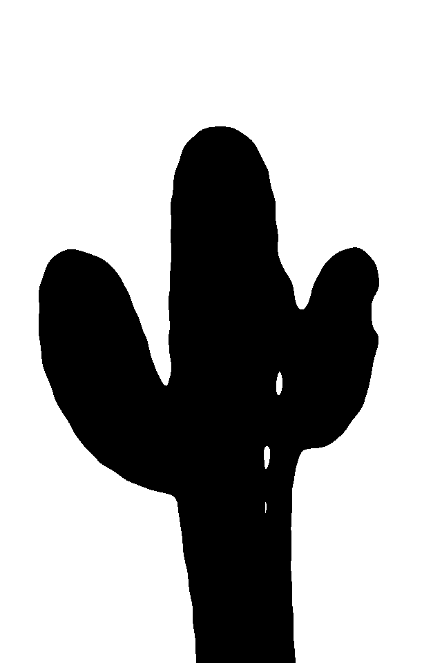
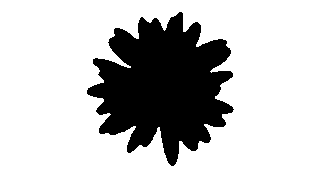
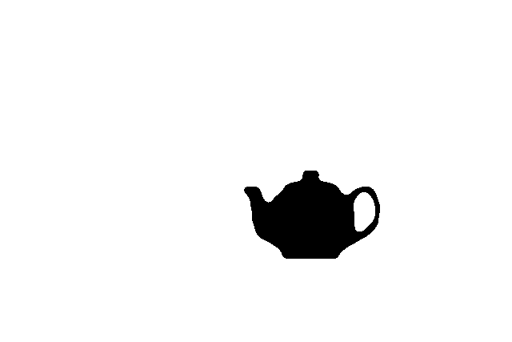

For this assignment, I was tasked to use images from photographs to create models of cookie cutters using Rhino.
I started with three images.
Teapot, Cactus, and Flower images sourced from Unsplash
Next, I used Photoshop to make the images black and white with simplified borders.
  
Next, I used Illustrator to trace and create curves for each image. I then exported each AI file into a DXF file format
Next, I imported each DXF file into Rhino and used the curves to construct a cookie cutter model. I offsetted each curve to create a border, then extruded the two curves to create a wall. For each cutter, I also extruded a shorter based that you can use to press down on when you make cookies. For the teapot, I had to add a surface to connect the exterior wall with the interior of the teapot's handle so that the cookie cutter stayed in one piece. Finally I merged the curves with a Boolean Union to create one single shape.
Check out my Rhino files here: Cactus, Daisy, Teapot
Once my models were finished, I exported the final result to an STL file for each cookie cutter.